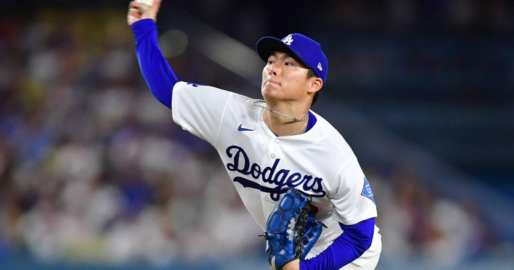

NLCS Game 2 and ALCS Game 1 share Monday night
Doubleheader Monday: Yamamoto vs. Henderson in NLCS Game 2 at 5 p.m. ET, then Guardians-Rays open the ALCS at 8 p.m. ET.

Disclosure: this post contains affiliate links. I earn a commission on qualifying purchases.
# NLCS Game 2 and ALCS Game 1 share Monday night
October is doing its thing: both League Championship Series take the field on the same night. NLCS Game 2 goes first at 5 p.m. ET, then the ALCS opener follows at 8 p.m. ET. Here's everything you need for the doubleheader.
NLCS Game 2: Dodgers at Brewers, 5 p.m. ET
Milwaukee holds a 1-0 series lead after Sunday's 2-1 win, and now the Dodgers send out Yoshinobu Yamamoto to stop the bleeding. The Brewers counter with Logan Henderson in front of the home crowd.
The series opened with a classic pitcher's duel, and Game 2 sets up the same way — two starters who can miss bats, with the Dodgers' star power trying to solve a Milwaukee staff that's been relentless all October.
Watch on Fox and FS1 at 5 p.m. ET.
ALCS Game 1: Guardians at Rays, 8 p.m. ET
The ALCS finally gets underway, and the storylines write themselves:
Coming off Saturday's 2-0 Game 5 win: Rested since sweeping the Yankees
Won three straight after falling 0-2 in the ALDS: Top-seeded home-field advantage
Rotation on short rest: Rotation lined up and fresh
Cleveland has been living on adrenaline since its 0-2 ALDS hole — the question is whether that momentum survives a rested, deeper Tampa Bay team that hasn't played a meaningful game in days.
Watch on TBS and truTV at 8 p.m. ET.
Full schedule and start times: northjersey.com
Watch
Source: "NLCS keys for Dodgers to win Game 2 against Brewers" — DodgerBlue.com. The video breaks down what the Dodgers have to fix after the Game 1 loss and how they can bounce back against Milwaukee in Game 2.
Gear up: Sports gear angle: via Fanatics